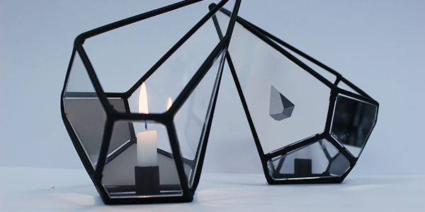

Digital Strategy
El Tiempo (2016)
Digital strategy proposal for an important local newspaper. Design methodologies and tools were applied on customer relationship management which allowed the identification of consumer patterns and styles. These patterns were then used to build a platform expansion that increases the engagement of side users and boosts the interaction between users.
Done in collaboration with Nathaly Weeber, Mariana Santos & Jimena Martinez at the Faculty of Architecture and Design, Universidad de los Andes.
Interaction
Live Act Systema Solar(2014)
Interactive performance application for Systema Solar's new show for their album 'La Revancha del Burro'. Visual effects were design and developed, they are controlled by the movements of the musicians on stage using Microsoft's Kinect. This visual compositions are being used in Systema Solar's concerts around Colombia and Europe.
Producer: Panoramika
Creative Direction: Sergio Zaraza / Vanessa Gocksch
Composition, Patch visual design and Programming: Carlos Mario Rodriguez / Francisco Ramirez / Juan C. Ortiz
sPitch (2016)
Data is a mean by itself, an abstraction from reality. There is a virtual architecture where an omnipresent dynamic traffic of information exists, information that makes up our reality but that we are not aware of. We live in cities that are saturated of networks, 'data highways'; we assume they work, but we are not conscious of their existence. We cohabit with data, with its means and its utilities, but we do not materialize its existence.
sPitch is a little creature that lives inside your phone. Every moment sPitch listens the WiFi networks that inhabits the space where he is in.
sPitch likes silence and gets scares when he listens a lot of networks at the same time; he will yell when the space is overflown by networks and can only be calmed down if he moves to a zone with much less WiFi networks.
Art Sonor.
Faculty of Fine Arts, University of Barcelona.
Somebody's Watching Me (2014)
For VICE's launch party in Colombia we developed an interactive installation consisting of 30 giant eyeballs projected on circular structures on the wall. The eyes blink and rotate following the movement of the people around the world.
Producer: Panoramika
Creative Direction: Sergio Zaraza & Carlos Mario Rodriguez
Design and Development: Juan C. Ortiz & Franciso Ramirez
MYO: Claro Presentation at Asobancaria (2015)
Development of an interactive show using a MYO sensor o control DMX lights and videos for the communications company Claro. The show was presentes at Asobancaria 2015, meeting held in Catagena, Colombia.
Producer: Panoramika
Direction: Santiago Arreaza
Executive Producer: Ícaro López de Mesa
Animation and composition: Daniel Cantor / Diego Castañeda
Programming: Juan C. Ortiz
Product Design
La Flamme (2016)


'La Flamme' is a small series of hanging lamps and lanterns designed through processes of computational geometry applied to the labour of local artisans. The lamps and lanterns are made of steel wire rod, and acrilyc mirrors; conceived formally from 3D-Voronoi principles using Grasshopper and Rhinoceros.
Photography
Belinda (2017)
The series of photographies are the representation of a scene from the script 'Belinda', written by a cinematographic adaptation of the novel 'La tragedia de Belinda Elsner' by Germán Espinosa. The exercise prompts the use of guerrilla filmmaking in the process of art direction and film photography.
Done in collaboration with Juanita Gamboa, Angélica Velandia & Maria Alejandra Puerto at the Faculty of Architecture and Design, Universidad de los Andes.
Punto de Fuerza (2016)
This photography project comes from the observation and intention of describing the movements of the human body through the simplification of its lines. A gymnastics athlete is the most suited model to accomplish in a fraction of a second a static image of a very complex movement, a movement not common in nature.
Done in collaboration with Federico Panni & Giullia Edalli at the Faculty of Fine Arts, University of Barcelona.
Arquitectura en cielo (In progress)
'Arquitectura en cielo' is an ongoing exploration on the relationship between architecture and sky, sometimes perceived as void. Through photography I try to understand the interaction between these two distant but perceptually cohesive spaces.
Research
Master Thesis: Tadava - Visual Analytics Architecture for large table-based datasets (2018)
Ongoing research on sampling, summarize and exploration of table-based datasets to provide the user with a representative and understandable sample of the data.
Link to project.
Master Thesis on Information Engineering. Directed by John Guerra at the Faculty of Engineering, Universidad de los Andes.
Undergraduate Systems and Computing Engineering Project: SPEL, Location-based event recommendation participatory report system(2015)
SPEL is location-based participatory events recommendation system built on top of a content-recommmendation system. Through open participatory collaboration and geographic information systems concepts, SPEL aims to deliver user-generated and validated events recommendations on a university community. OWL ontologies are expanded and an architecture for mobile technologies is implemented to deliver relevant recommendations to SPEL users.
Link to project documentation.
Undergraduate project on Systems and Computing Engineering. Directed by Claudia Jiménez at the Faculty of Engineering, Universidad de los Andes.
About
BSC Systems and Computing Engineering, minor in Visual Computing
BFA Design, emphasis in Product Design.
I'm a Colombian designer and engineer currently living in Bogotá.
I'm interested in the application of design thinking and methodologies on the development of contemporary technologies and digital media.
I have experience working on the design and development of interactive experiences for the entertainment industry, on data analytics projects for state entities, and on strategic design for digital services.
I explore the technology of new digital media, yet I see technology as a medium itself. I believe in the poetics of fiction and the relevance of speculative design in the creative process for critical thinking.